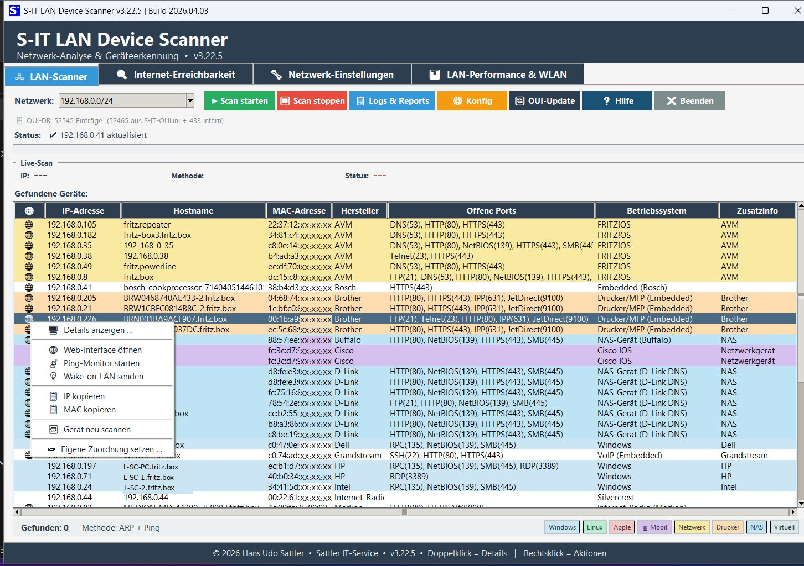
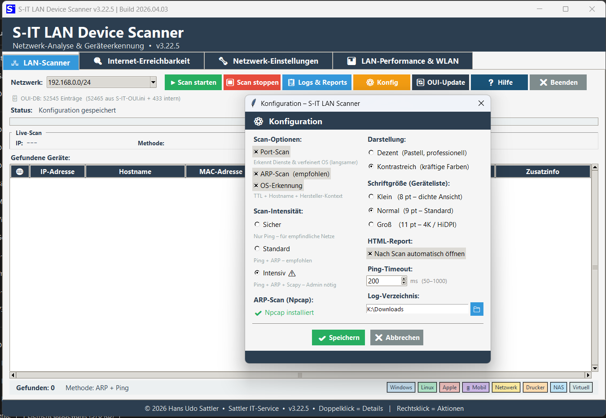
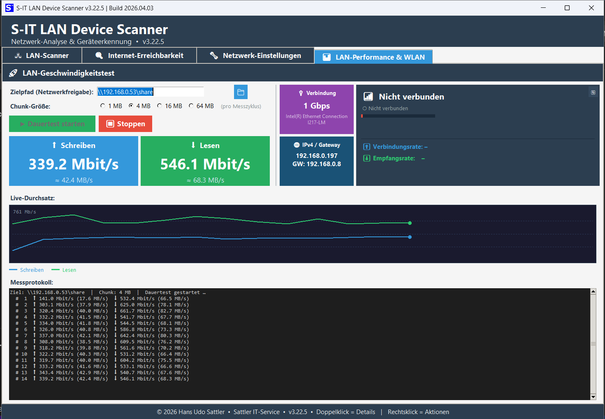
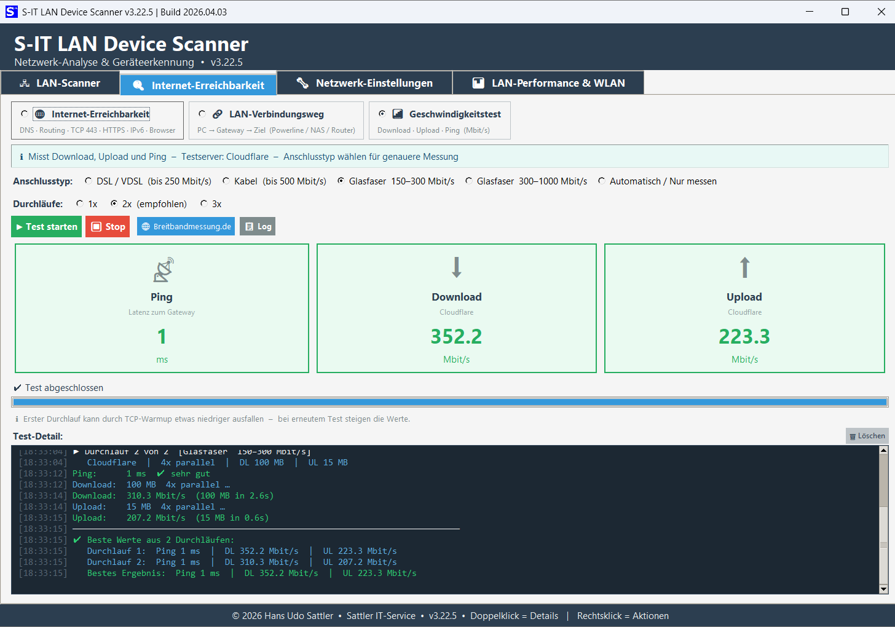

Leistungsmerkmale
Netzwerk-Scan
Erkennt Geräte, Hersteller (OUI-Datenbank), Betriebssysteme und offene Ports im LAN und WLAN – inklusive Intensiv-Scan mit Npcap.
Internet-Test
Misst Ping, Download und Upload mit Testprotokoll – ideal zur Dokumentation beim Kunden.
LAN-Performance
Live-Durchsatztest für Netzwerkfreigaben mit Schreib- und Leseraten und grafischer Anzeige.
LOG-Manager
Integrierter LOG-Manager zur Auswertung, Archivierung und HTML-Report-Erstellung aller Scan-Ergebnisse.
WLAN-Analyse
WLAN-Karte mit SSID, Signalstärke, Verbindungsrate und Empfangsrate direkt aus netsh – ohne Drittanbieter-Software.
OUI-Updater
Integriertes Tool zur Aktualisierung der Hersteller-Datenbank – stets aktuelle Geräteerkennung auf Knopfdruck.
Screenshots




Download & Dokumentation
Die aktuelle Version, Hilfe-Datei und Changelog findest du im Release-Bereich auf GitHub.
Systemanforderungen
| Komponente | Anforderung |
|---|---|
| Betriebssystem | Windows 10 / Windows 11 (64-Bit) |
| Rechte | Administratorrechte für den Intensivmodus erforderlich |
| Optional | Npcap für erweiterten ARP- und Intensiv-Scan |
| Lieferumfang | Setup, Deinstaller, Hilfe-Datei und ChangeLog |
Sicherheits- und Installationshinweis
Hinweis zu Virenscannern & SmartScreen
Da es sich um unabhängig entwickelte Windows-Tools handelt, kann es vorkommen, dass Windows SmartScreen oder installierte Internet-Security-Programme die Datei zunächst als unbekannt einstufen.
In diesem Fall fügen Sie das Programm bitte als vertrauenswürdig bzw. als Ausnahme in Ihrer Sicherheitssoftware hinzu. Gegebenenfalls muss der Windows SmartScreen-Filter einmalig bestätigt oder vorübergehend deaktiviert werden.
Neu in Version 3.22.14
Verbesserte WLAN-Erkennung
WLAN-Karte mit SSID, Signalstärke, Verbindungs- und Empfangsrate aus netsh – zuverlässige Anzeige auch ohne Administratorrechte.
Zweispaltige LAN-Performance-Ansicht
Neue Aufteilung: links Durchsatz-Steuerung und Messwerte, rechts Verbindungs- und WLAN-Karte für bessere Übersicht.
Optimierter LOG-Manager
Verbessertes HTML-Report-Format, zuverlässigere Öffnung nach Scan-Abschluss und stabilisiertes Verhalten bei mehrfachem Aufruf.
OUI-Updater integriert
Hersteller-Datenbank lässt sich direkt aus dem Programm heraus aktualisieren – mit INI-basierter Pfadspeicherung und Protokolldatei.
Zahlreiche Fehlerbehebungen
WLAN-Adapter nicht mehr fälschlich als LAN erkannt, Encoding-Probleme bei Umlauten in netsh behoben, custom Gerätezuweisungen ohne Dopplungen.
Erwähnungen & Reviews
Kontakt / Impressum
Hat Ihnen dieses Tool geholfen?
Der S-IT LAN Device Scanner wird kostenlos entwickelt und gepflegt.
Eine kleine Spende hilft dabei, die Tools weiterzuentwickeln. Herzlichen Dank! 🙏